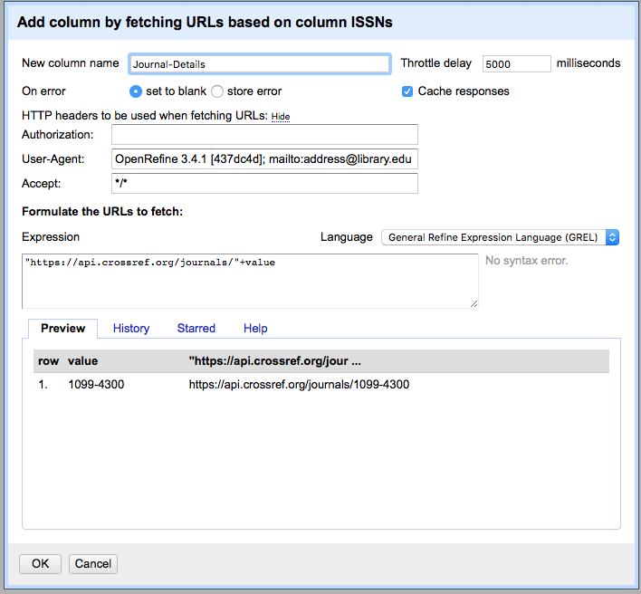

Content from Introduction to OpenRefine
Last updated on 2023-05-01 | Edit this page
Estimated time: 15 minutes
Overview
Questions
- What is OpenRefine? What can it do?
Objectives
- Explain what the OpenRefine software does
- Explain how the OpenRefine software can help work with data files
What is OpenRefine?
OpenRefine is a desktop application that uses your web browser as a graphical interface. It is described as “a power tool for working with messy data” (David Huynh) - but what does this mean? It is probably easiest to describe the kinds of data OpenRefine is good at working with and the sorts of problems it can help you or your team solve.
OpenRefine is most useful where you have data in a simple tabular format such as a spreadsheet, a comma separated values file (csv) or a tab delimited file (tsv) but with internal inconsistencies either in data formats, or where data appears, or in terminology used. OpenRefine can be used to standardize and clean data across your file. It can help you:
- Get an overview of a data set
- Resolve inconsistencies in a data set, for example standardizing date formatting
- Help you split data up into more granular parts, for example splitting up cells with multiple authors into separate cells
- Match local data up to other data sets - for example, in matching forms of personal names against name authority records in the Virtual International Authority File (VIAF)
- Enhance a data set with data from other sources
Some common scenarios might be:
- Where you want to know how many times a particular value (name, publisher, subject) appears in a column in your data
- Where you want to know how values are distributed across your whole data set
- Where you have a list of dates which are formatted in different ways, and want to change all the dates in the list to a single common date format. For example:
| Data you have | Desired data |
|---|---|
| 1st January 2014 | 2014-01-01 |
| 01/01/2014 | 2014-01-01 |
| Jan 1 2014 | 2014-01-01 |
| 2014-01-01 | 2014-01-01 |
- Where you have a list of names or terms that differ from each other but refer to the same people, places or concepts. For example:
| Data you have | Desired data |
|---|---|
| London | London |
| London] | London |
| London,] | London |
| london | London |
- Where you have several bits of data combined together in a single column, and you want to separate them out into individual bits of data with one column for each bit of the data. For example going from a single address field (in the first column), to each part of the address in a separate field:
| Address in single field | Institution | Library name | Address 1 | Address 2 | Town/City | Region | Country | Postcode |
|---|---|---|---|---|---|---|---|---|
| University of Wales, Llyfrgell Thomas Parry Library, Llanbadarn Fawr, ABERYSTWYTH, Ceredigion, SY23 3AS, United Kingdom | University of Wales | Llyfrgell Thomas Parry Library | Llanbadarn Fawr | Aberystwyth | Ceredigion | United Kingdom | SY23 3AS | |
| University of Aberdeen, Queen Mother Library, Meston Walk, ABERDEEN, AB24 3UE, United Kingdom | University of Abderdeen | Queen Mother Library | Meston Walk | Aberdeen | United Kingdom | AB24 3UE | ||
| University of Birmingham, Barnes Library, Medical School, Edgbaston, BIRMINGHAM, West Midlands, B15 2TT, United Kingdom | University of Birmingham | Barnes Library | Medical School | Edgbaston | Birmingham | West Midlands | United Kingdom | B15 2TT |
| University of Warwick, Library, Gibbett Hill Road, COVENTRY, CV4 7AL, United Kingdom | University of Warwick | Library | Gibbett Hill Road | Coventry | United Kingdom | CV4 7AL |
- Where you want to add to your data from an external data source:
| Data you have | Date of Birth from VIAF (Virtual International Authority File) | Date of Death from VIAF (Virtual International Authority File) |
|---|---|---|
| Braddon, M. E. (Mary Elizabeth) | 1835 | 1915 |
| Rossetti, William Michael | 1829 | 1919 |
| Prest, Thomas Peckett | 1810 | 1879 |
What Should I Know When Working With OpenRefine?
- No internet connection is needed, and none of the data or commands you enter in OpenRefine are sent to a remote server.
- You are NOT modifying original/raw data.
- Projects are autosaved every five minutes and when OpenRefine is properly shut down (Ctrl+C). See History in User Manual for details.
- Files are saved locally such that if you are working on two computers you will have to export/import files/projects.
Key Points
- OpenRefine is ‘a tool for working with messy data’
- OpenRefine works best with data in a simple tabular format
- OpenRefine can help you split data up into more granular parts
- OpenRefine can help you match local data up to other data sets
- OpenRefine can help you enhance a data set with data from other sources
Content from Importing data into OpenRefine
Last updated on 2023-11-16 | Edit this page
Estimated time: 15 minutes
Overview
Questions
- How do I get data into OpenRefine?
Objectives
- Successfully import data into OpenRefine
Importing data
OpenRefine does not manipulate your data directly. Instead, the data you import and all the changes you make are stored in a project. You can stop working on a project and continue later if you like. When you want to ‘refine’ a new file, you start by creating a new project. When you want to continue working on a project, you can open it through “Open Project”. It is also possible to export a project on one computer and continue working on it on a different computer. To do so, you transfer the exported files to the new computer and use “Import Project” on the new computer.
What kinds of data files can I import?
There are several options for getting your data set into OpenRefine. You can upload or import files in a variety of formats including:
- TSV (tab-separated values)
- CSV (comma-separated values)
- TXT
- Excel
- JSON (javascript object notation)
- XML (extensible markup language)
- Google Spreadsheet
Create your first OpenRefine project (using provided data)
To import the data for the exercise below, follow the instructions in Setup to download the data and run OpenRefine. NOTE: If OpenRefine does not open in a browser window, open your browser and type the address http://127.0.0.1:3333/ to take you to the OpenRefine interface.
Once OpenRefine is launched in your browser, click
Create Projectfrom the left hand menu and selectGet data from This ComputerClick
Choose Files(or ‘Browse’, depending on your setup) and locate the file which you have downloaded calleddoaj-article-sample.csvClick
Next»where the next screen (see below) gives you options to ensure the data is imported into OpenRefine correctly. The options vary depending on the type of data you are importing.Click in the
Character encodingbox and set it toUTF-8. This ensures that OpenRefine correctly interprets the imported data as UTF-8 encoded. If you don’t select this you may find that some special characters (e.g. smart quotation marks) are not displayed correctly.Ensure the first row is used to create the column headings by checking the box
Parse next 1 line(s) as column headersOpenRefine will automatically select
Use character " to enclose cells containing column separators(such as a comma) as part of their data. This will make sure that OpenRefine doesn’t misinterpret any commas (or other characters) within the column data as a delimiter. Keep this option selected.From OpenRefine 3.4 onwards there is an option to Trim leading & trailing whitespace from strings when importing separator-based files. Keeping this checked will ensure that values like
EnglishandEnglish, which differ by a single trailing space, are not treated as different values after the importMake sure the
Attempt to parse cell text into numbersbox is not checked, so OpenRefine doesn’t try to automatically detect numbers because this could cause errors such as confusion between date formats (e.g. DD/MM/YYYY vs MM/DD/YYYY).-
The Project Name box in the upper right corner will default to the title of your imported file. Click in the
Project Namebox to give your project a different name, if desired.This is a good moment to review the points from What Should I Know When Working with OpenRefine?
Once you have selected the appropriate options for your project, click the
Create project »button at the top right of the screen. This will create the project and open it for you. Projects are saved as you work on them, there is no need to save copies as you go along.
To open an existing project in OpenRefine you can click
Open Project from the main OpenRefine screen (in the left
hand menu). When you click this, you will see a list of the existing
projects and can click on a project’s name to open it.
Going Further
- Look at the other options on the Import screen - try changing some of these options and see how that changes the Preview and how the data appears after import.
Carefully guide learners on how to revisit OpenRefine’s homepage to explore import options when creating new or re-opening existing projects, select the large blue diamond in the upper left corner of the browser window.
- Do you have access to JSON or XML data? If so the first stage of the import process will prompt you to select a ‘record path’ - that is the parts of the file that will form the data rows in the OpenRefine project.
Key Points
- Use the
Create Projectoption to import data - You can control how data imports using options on the import screen
- Several files types may be imported into OpenRefine.
Content from Layout of OpenRefine, Rows vs Records
Last updated on 2024-02-09 | Edit this page
Estimated time: 15 minutes
Overview
Questions
- How is data organised in OpenRefine?
- How do I access options to amend data in OpenRefine?
- What is the difference between Rows and Records in OpenRefine?
- How do I work with single cells that contain multiple values in a list?
Objectives
- Locate controls for navigating data in OpenRefine
- Find options to work with data through the OpenRefine dropdown menus
- Split cells which contain multiple bits of data so that each piece of data is in its own cell
The layout of OpenRefine
OpenRefine displays data in a tabular format. Each row will usually represent a ‘record’ in the data, while each column represents a type of information. This is very similar to how you might view data in a spreadsheet or database. As with a spreadsheet, the individual bits of data live in ‘cells’ at the intersection of a row and a column.
OpenRefine only displays a limited number of rows of data at one time. You can adjust the number choosing between 5, 10 (the default), 25, 50, 100, 500, and 1000 at the top left of the table of data. You can navigate through the records by using the previous/next/first/last navigation options at the top right of the table of data.
In OpenRefine it is always possible to undo any changes: note the left panel, currently empty. Read the four words at the top of the panel: Facet/Filter and Undo/Redo. We will focus on the undo/redo commands much later in the workshop; you are welcome to use it at anytime, as needed.
Working with data in OpenRefine
Most options to work with data in OpenRefine are accessed from drop down menus at the top of the data columns. When you select an option in a particular column (e.g. to make a change to the data), it will affect all the cells in that column. If you want to make changes across several columns, you will need to do this one column at a time.
Rows and Records
OpenRefine has two modes of viewing data: ‘Rows’ and ‘Records’. At the moment we are in Rows mode, where each row represents a single record in the data set - in this case, an article. In Records mode, OpenRefine can link together multiple rows as belonging to the same Record. Rows will be assigned to Records based on the values in the first column. See more details of Rows and Records in the OpenRefine documentation.
Splitting Cells
To see how this works in practice we can split author names into separate cells. If you look at the Author column you should be able to see that there are multiple names in each cell separated by the pipe symbol ( | ).
To work with the author names effectively in OpenRefine, we need to
have each name in an individual cell. To split the names into their own
cells, we can use a Split multi-valued cells function:
- Click the dropdown menu at the top of the Author column
- Choose
Edit cells->Split multi-valued cells - In the prompt type the ( | ) symbol and click
OK- Note that the rows are still numbered sequentially
- Click the
Recordsoption to change to Records mode- Note how the numbering has changed - indicating that several rows are related to the same record


Note in the images above the difference between: Rows with the same Title appear below each shared title, interrupted the numbered sequence in the third column from the left. Shared titles have the same shading, which may be very difficult to distinguish visually, so look for each star and flag in the leftmost columns, which indicates a new row, that is an item with a different author.
Now that we can split multi-valued cells, we’ll cover how to join them back together.
Joining Cells
A common workflow with multi-valued cells is
- split multi-valued cells into individual cells (what we did above)
- modify/refine/clean individual cells
- join multi-valued cells back together
Modifying cells will be covered in future lessons, but for now we will cover how to join cells back together that have been split previously.
- Click the dropdown menu at the top of the Author column
- Choose
Edit cells->Join multi-valued cells - In the prompt type the ( | ) symbol
- Here we are specifying the delimiter character for OpenRefine to use to join the values together.
- Click
OKto join the Authors cells back together
You will now see that split rows have gone away - the Authors have been joined into a single cell with the specified delimiter. Our Rows and Records values will now be the same since we do not have any more columns with split (multi-valued) cells.
- Click both the
RowsandRecordsoptions and observe how the numbers of Rows and Records are equal
Choosing a good separator
The value that separates multi-valued cells is called a separator or delimiter. Choosing a good separator is important. In the examples, we’ve seen the pipe character ( | ) has been used.
Choosing the wrong separator can lead to problems. Consider the following multi-valued Author example, with a pipe as a separator.
Jones, Andrew | Davis, S.When we tell OpenRefine to split this cell on the pipe ( | ), we will get the following two authors each in their own cell since there is a single pipe character separating them.
- Author 1: Jones, Andrew
- Author 2: Davis, S.
Now imagine that the document creator had chosen a comma as the separator instead of a pipe.
Jones, Andrew , Davis, S.Can you spot the problem? Can you tell where one author stops and the next begins?
OpenRefine will split on every comma it encounters, so we’ll end up with 4 authors, not two, because OpenRefine cannot tell that Jones, Andrew is supposed to be a single author. We will get the following four “authors” because there are 3 commas separating the name parts.
- Author 1: Jones
- Author 2: Andrew
- Author 3: Davis
- Author 4: S.
Splitting on a comma will not work with Authors because the names may include commas within them.
Choose a separator that is not in your data values
When creating a spreadsheet with multi-valued cells, it is important to choose a separator that will never appear in the cell values themselves. For this reason, the pipe character ( | ) is often a good choice since it is rarely used in data. Commas, colons and semi-colons should be avoided as separators.
Splitting Subjects into separate cells
- What separator character is used in the Subjects cells?
- How would you split these subjects into individual cells?
- The subject words/headings are divided up with the pipe ( | ) character
- To split the subject words into individual cells you need to:
- Click the dropdown menu at the top of the Subjects column
- Choose ‘Edit cells->Split multi-valued cells’
- In the prompt type the ( | ) symbol and click ‘OK’
Joining the Subjects column back together
- Using what we’ve learned, now Join the Subjects back together
- The subject words/headings were previously delimited with the pipe ( | ) character
- To join the split subject cells back to a single cell you need to:
- Click the dropdown menu at the top of the Subjects column
- Choose ‘Edit cells->Join multi-valued cells’
- In the prompt type the ( | ) symbol and click ‘OK’
Key Points
- OpenRefine uses rows and columns to display data
- Most options to work with data in OpenRefine are accessed through a drop down menu at the top of a data column
- When you select an option in a particular column (e.g. to make a change to the data), it will affect all the cells in that column
- OpenRefine has a Records mode which links together multiple rows into a single record
- Split and join multi-valued cells to modify the individual values within them
- When creating multi-valued cells in your data, choose a separator that will not appear in the data values
Content from Faceting and filtering
Last updated on 2023-11-28 | Edit this page
Estimated time: 20 minutes
Overview
Questions
- What is a facet in OpenRefine?
- What is a filter in OpenRefine?
- How can I use filters and facets to explore data in OpenRefine?
- How can I correct common data issues in my data with OpenRefine?
Objectives
- Explain what Facets and Filters are
- Answer questions about the content of a data set using Facets
- Use facets and filters to work with a subset of data
- Correct data problems through a facet
Facets
Facets are one of the most useful features of OpenRefine and can help in both getting an overview of the data and to improve the consistency of the data.
A ‘Facet’ groups all the values that appear in a column, and then allows you to filter the data by these values and edit values across many records at the same time.
One of the most commonly used facets is called a ‘Text facet’. This groups all the text values in a column and lists each value with the number of records it appears in. The facet information always appears in the left hand panel in the OpenRefine interface.
To create a Text Facet for a column, click on the drop down menu at
the top of the publisher column and choose
Facet -> Text Facet. The facet will then appear in the
left hand panel.
The facet consists of a list of values used in the data. You can filter the data displayed by clicking on one of these headings.
You can include multiple values from the facet in a filter at one
time by using the Include option which appears when you put
your mouse over a value in the Facet.
You can also invert the filter to show all records which
do not match your selected values. This option appears at the top of the
Facet panel when you select a value from the facet to apply as a
filter.
Let’s create a text facet
- Click on the drop down menu at the top of the publisher column and
choose
Facet > Text Facet. The facet will then appear in the left hand panel - To select a single value, click the text of the relevant line in the facet
- To select multiple values click the
Includeoption on the appropriate line in the facet (which only appears when you mouse over the line) - You can ‘invert’ your selections to
exclude - Include a value and then look at top to invert inclusion.
Which licences are used for articles in this file?
Use a text facet for the licence column and
answer these questions:
- What is the most common Licence in the file?
- How many articles in the file don’t have a licence assigned?
- Create a facet for the ‘Licence’ column
- Sort values by
count - What is the most common Licence in the file? Answer:
CC BY - How many articles in the file don’t have a licence assigned? Answer: 6
Filters
As well as using Facets to filter the data displayed in OpenRefine you can also apply ‘Text Filters’ which looks for a particular piece of text appearing in a column based on a unique text string, like a ‘find’ feature. Text filters are applied by clicking the drop down menu at the top of the column you want to apply the filter to and choosing ‘Text filter’.
As with Facets, the Filter options appear in the left hand panel in OpenRefine. As you type the text you want to use in the Filter in the Filter’s text box, OpenRefine works to display only rows that contain that text in the relevant column.
You can also use regular expressions in the filter.
Working with filtered data
It is very important to note that when you have filtered the data displayed in OpenRefine, any operations you carry out will apply only to the rows that match the filter - that is the data currently being displayed. To confirm you are working with the data you intended to select, check the number of matching records displayed above the data table.
Other types of Facet
As well as ‘Text facets’ OpenRefine also supports a range of other types of facet. These include:
- Numeric facets
- Timeline facets (for dates)
- Scatterplot facets
- Custom facets
Numeric and Timeline facets display graphs instead of lists of values. The graph includes ‘drag and drop’ controls you can use to set a start and end range to filter the data displayed.
Scatterplot facets are less commonly used. For further information on these see the tutorial at https://web.archive.org/web/20190105063215/http://enipedia.tudelft.nl/wiki/OpenRefine_Tutorial#Exploring_the_data_with_scatter_plots.
Custom facets are a range of different types of facets. Some of the default custom facets are:
- Word facet - this breaks down text into words and counts the number of records each word appears in
- Duplicates facet - this results in a binary facet of ‘true’ or ‘false’. Rows appear in the ‘true’ facet if the value in the selected column is an exact match for a value in the same column in another row
- Text length facet - creates a numeric facet based on the length (number of characters) of the text in each row for the selected column. This can be useful for spotting incorrect or unusual data in a field where specific lengths are expected (e.g. if the values are expected to be years, any row with a text length more than 4 for that column is likely to be incorrect)
- Facet by blank - a binary facet of ‘true’ or ‘false’. Rows appear in the ‘true’ facet if they have no data present in that column. This is useful when looking for rows missing key data.
Facets are intended to group together common values and OpenRefine limits the number of values allowed in a single facet to ensure the software does not perform slowly or run out of memory. If you create a facet where there are many unique values (for example, a facet on a ‘book title’ column in a data set that has one row per book) the facet created will be very large and may either slow down the application, or OpenRefine will not create the facet.
Find all publications without a DOI
- Use the
Facet by blankfunction to find all publications in this data set without a DOI
- On the
DOIcolumn drop down and selectFacets > Customized facets > Facet by blank -
Truemeans that it is blank, so you can:
- Select
includeon True in the facet to filter the list of publications to only those that don’t have a DOI
Amending data through facets
If you create a text facet you can edit the values in the facet to change the value for several records at the same time. To do this, mouse-over the value you want to edit and click the ‘edit’ option that appears.
This approach is useful in relatively small facets where you might have small variations through punctuation or typing errors etc. For example, a column that should contain only terms from a small restricted list such as days of the week or months of the year.
The list of values in the facet will update as you make edits.
Correct the Language values via a facet
- Create a
Text faceton thelanguagecolumn and correct the variation in theENandEnglishvalues.
- Create a Text facet on the Language column
- Notice that there is both
ENandEnglish - Put the mouse over the
Englishvalue - Click
Edit - Type
ENand clickApply - See how the Language facet updates
Key Points
- You can use facets and filters to explore your data
- You can use facets and filters work with a subset of data in OpenRefine
- You can correct common data issues from a Facet
Content from Clustering
Last updated on 2023-10-25 | Edit this page
Estimated time: 20 minutes
Overview
Questions
- What is Clustering in OpenRefine and when would you use it?
- How does clustering work in OpenRefine?
Objectives
- Explain what clustering is in OpenRefine
- Use clustering to identify and replace varying forms of the same data with a single consistent value
Clustering
The Cluster function groups together similar, but inconsistent values in a given column and lets you merge these inconsistent values into a single value you choose.
This is very effective where you have data with minor variations in data values, e.g. names of people, organisations, places, classification terms.
To use the ‘Cluster’ function, click on the Edit Cells
menu option in the relevant column and choose
Cluster and edit...
The ‘Clusters’ are created automatically according to an algorithm. OpenRefine supports a number of different clustering algorithms - some experimentation may be required to see which clustering algorithm works best with any particular set of data, and you may find that using different algorithms highlights different clusters.
For more information on the methods used to create Clusters, see OpenRefine’s Technical Reference on Clustering in Depth.
For each cluster, you have the option of ‘merging’ the values together - that is, replace the various inconsistent values with a single consistent value. By default, OpenRefine uses the most common value in the cluster as the new value, but you can select another value by clicking the value itself, or you can type the desired value into the ‘New Cell Value’ box.
Key Points
- Clustering is a way of finding variant forms of the same piece of data within a dataset (e.g. different spellings of a name)
- There are a number of different Clustering algorithms that work in different ways and will produce different results
- The best clustering algorithm to use will depend on the data
- Using clustering you can replace varying forms of the same data with a single consistent value
Content from Working with columns and sorting
Last updated on 2025-03-25 | Edit this page
Estimated time: 10 minutes
Overview
Questions
- How do I move, rename or remove columns in OpenRefine?
- How do I sort data in OpenRefine?
Objectives
- Explain how to reorder, rename and remove columns
- Explain how to sort data in columns
Reordering columns
You can reorder the columns by clicking the drop-down menu at the top of the first column (labelled ‘All’), and choosing ‘Edit columns’ > ‘Re-order / remove columns …’.
You can then drag and drop column names to reorder the columns, or remove columns completely if they are not required.
Renaming columns
You can rename a column by opening the drop-down menu at the top of the column that you would like to rename, and choosing ‘Edit column’ > ‘Rename this column’. You will then be prompted to enter the new column name.
Sorting data
What if you want to organize your data in a way that will let you
detect outliers (blanks, errors, etc.) more easily? You can accomplish
this by sorting your data in OpenRefine. You can do this by clicking on
the drop-down menu for the column you want to sort on, and choosing
Sort. You can then sort your data by text,
numbers, dates or
booleans (TRUE or
FALSE values). You can also specify what order to put
blanks and errors in the sorted results.
Once applied, locate the new “Sort” button at the top of the grid.
After clicking on the new “Sort” button, OpenRefine will present you with additional sorting options:
-
Remove sort- This option allows you to undo your sort. -
Reorder rows permanently- This option allows you to permanently change the order of your data to the sort. -
By *column name*- This option allows you to make changes to your pre-existing sort.
Unlike in Excel, ‘Sorts’ in OpenRefine are temporary - that is, if
you remove the Sort, the data will go back to its original
‘unordered’ state.
You can sort on multiple columns at the same time by adding another sorted column (in the same way).
Do not rush these last two sentences. Repeat them slowly after a pause and allow learners to explore how sorting works for a moment.
Although the “Undo/Redo” tab is not introduced until episode 9, it may be worth noting that applying a sort does not count as a change to the data because removing the sort will restore the data to its original order. However, once you select “Reorder Rows Permanently” this does count as a data change and adds an entry to the Undo/Redo history.
Key Points
- You can reorder, rename and remove columns in OpenRefine
- Sorting in OpenRefine always sorts all rows
- The original order of rows in OpenRefine is maintained during a sort until you use the option to Reorder Rows Permanently from the Sort drop-down menu
Content from Introduction to Transformations
Last updated on 2023-05-01 | Edit this page
Estimated time: 10 minutes
Overview
Questions
- How do I use transformations to programmatically edit my data?
- What are the kind of transformations Open Refine supports?
- What is GREL?
Objectives
- Describe common transformations
- Explain GREL, the General Refine Expression Language
Introducing Transformations
Through facets, filters and clusters OpenRefine offers relatively straightforward ways of getting an overview of your data, and making changes where you want to standardise terms used to a common set of values.
However, sometimes there will be changes you want to make to the data that cannot be achieved in this way. Such types of changes include:
- Splitting data that is in a single column into multiple columns (e.g. splitting an address into multiple parts)
- Standardising the format of data in a column without changing the values (e.g. removing punctuation or standardising a date format)
- Extracting a particular type of data from a longer text string (e.g. finding ISBNs in a bibliographic citation)
To support this type of activity OpenRefine supports ‘Transformations’ which are ways of manipulating data in columns. Transformations are normally written in a special language called ‘GREL’ (General Refine Expression Language). To some extent GREL expressions are similar to Excel Formula, although they tend to focus on text manipulations rather than numeric functions.
Full documentation for the GREL is available at https://docs.openrefine.org/manual/grelfunctions. This tutorial covers only a small subset of the commands available.
Common transformations
Some transformations are used regularly and are accessible directly through menu options, without having to type them directly.
Examples of some of these common transformations are given in the table below, with their ‘GREL’ equivalents. We’ll see how to use the GREL version later in this lesson.
| Common Transformation | Action | GREL expression |
|---|---|---|
| Trim leading and trailing whitespace | Removes any ‘whitespace’ characters (e.g. spaces, tabs) from the start and end of the current value | value.trim() |
| To titlecase | Converts the current value to titlecase (i.e. each word starts with an uppercase character and all other characters are converted to lowercase) | value.toTitlecase() |
| To uppercase | Converts the current value to uppercase | value.toUppercase() |
| To lowercase | Converts the current value to lowercase | value.toLowercase() |
Correct Publisher data
- Create a text facet on the Publisher column
- Note that in the values there are two that look almost identical - why do these two values appear separately rather than as a single value?
- On the publisher column use the dropdown menu to select
Edit cells->Common transforms->Collapse consecutive whitespace - Look at the publisher facet now - has it changed? (if it hasn’t
changed try clicking the
Refreshoption to make sure it updates)
Key Points
- Common transformations are available through the Menu option
Content from Writing Transformations
Last updated on 2023-05-01 | Edit this page
Estimated time: 15 minutes
Overview
Questions
- Where do I write GREL expressions in the OpenRefine interface?
- How do I write a valid GREL expression?
Objectives
- Explain how to write one’s own transformations using GREL
Writing transformations
To start writing transformations, select the column on which you wish
to perform a transformation and choose
Edit cells->Transform…. In the screen that displays you
have a place to write a transformation (the ‘Expression’ box) and then
the ability to Preview the effect the transformation would have on 10
rows of your data.
The transformation you type into the ‘Expression’ box has to be a
valid GREL expression. The default expression is the word
value by itself - which means the value that is currently
in the column - that is: make no change.
GREL functions are written by giving a value of some kind (a text string, a date, a number etc.) to a GREL function. Some GREL functions take additional parameters or options which control how the function works. GREL supports two types of syntax:
value.function(options)function(value, options)
Either is valid, and which is used is completely down to personal preference. In these notes the first syntax is used.
Next to the ‘Preview’ option are options to view:
- ‘History’ - a list of transformations you’ve previously used with the option to reuse them immediately or to ‘star’ them for easy access
- ‘Starred’ - a list of transformations you’ve ‘starred’ via the ‘History’ view
- ‘Help’ - a list of all the GREL functions and brief information on how to use them
Put titles into Title Case
Use Facets and the GREL expression value.toTitlecase()
to put the titles in Title Case
- Facet by publisher
- Select “Akshantala Enterprises” and “Society of Pharmaceutical Technocrats”
- To select multiple values in the facet use the
includelink that appears to the right of the facet - See that the Titles for these are all in uppercase
- Click the dropdown menu on the Title column
- Choose
Edit cells->Transform... - In the Expression box type
value.toTitlecase() - In the Preview pane under value.toTitlecase() you can see what the effect of running this will be
- Click
OK - Find examples of titles that are still not correct, or have been incorrectly cased (abbreviations, species names, etc.)
Key Points
- You can alter data in OpenRefine based on specific instructions
- You can preview the results of your GREL expression
Content from Transformations - Undo and Redo
Last updated on 2023-05-01 | Edit this page
Estimated time: 5 minutes
Overview
Questions
- How do the Undo and Redo features work?
Objectives
- Explain how to use Undo and Redo to retrace ones’ steps
Undo and Redo
OpenRefine lets you undo, and redo, any number of steps you have taken in cleaning the data. This means you can always try out transformations and ‘undo’ if you need to. The way OpenRefine records the steps you have taken even allows you to take the steps you’ve carried out on one data set, and apply it to another data set by a copy and paste operation.
The Undo and Redo options are accessed via
the lefthand panel.
The Undo/Redo panel lists all the steps you’ve taken so far. To undo steps, click on the last step you want to preserve in the list and this will automatically undo all the changes made since that step.
The remaining steps will continue to show in the list but greyed out, and you can reapply them by clicking on the last step you want to apply.
However, if you ‘undo’ a set of steps and then start doing new transformations, the greyed out steps will disappear and you will no longer have the option to ‘redo’ these steps.
If you wish to save a set of steps to be re-applied later, for
instance, to a different project, you can click the Extract
button. This gives you the option to select steps that you want to save,
and extract the code for those steps in a format called ‘JSON’. You can
copy the extracted JSON and save it as a plain text file (e.g. in
Notepad). If you are using OpenRefine version 3.6.0 or later, you can
also click the Export button in the “Extract operation
history” window to open a save dialog and directly save the JSON instead
of first copying it to a text file.
To apply a set of steps you have copied or saved in this ‘JSON’
format use the Apply button and paste in the JSON. In this
way you can share transformations between projects and with other
people.
Undo/Redo data is stored with the Project and is saved automatically as you work, so next time you open the project, you can access your full history of steps you have carried out and undo/redo in exactly the same way.
Key Points
- You can use Undo and Redo to retrace ones’ steps
- You can save and apply a set of steps to a new set of data using the ‘Extract’ and ‘Apply’ features
Content from Transforming Strings, Numbers, Dates and Booleans
Last updated on 2023-05-26 | Edit this page
Estimated time: 20 minutes
Overview
Questions
- How do I use transformations to programmatically edit my data?
- How do I transform the various data types?
Objectives
- Name and describe 4 types of data - String, Number, Date and Boolean
- Transform dates for further analysis
- Use Boolean to identify information recorded in a different format
- Create and run transformations based on Boolean Values
Data types
Understanding data types can help you write a wider variety of transformations using GREL.
Data types in OpenRefine
Every piece of data in OpenRefine has a ‘type’. The most common ‘type’ is a ‘string’ - that is a piece of text. However there are other data types available and transformations let you convert data from one type to another where appropriate. The data types supported are:
- String
- Number
- Date
- Boolean
- Array (covered in the next lesson)
Dates and Numbers
So far we’ve been looking only at ‘String’ type data. Much of the time it is possible to treat numbers and dates as strings. For example in the Date column we have the date of publication represented as a String. However, some operations and transformations only work on ‘number’ or ‘date’ typed data, such as sorting values in numeric or date order. To carry out these functions we need to convert the values to a date or number first.
Reformat the Date
- Make sure you remove all Facets and Filters
- On the Date column use the dropdown menu to select
Edit cells -> Transform - In the ‘Expression’ box type the GREL expression
value.toDate("dd/MM/yyyy")and press OK. - Note how the values are now displayed in green and follow a standard convention for their display format (ISO 8601) - this indicates they are now stored as date data types in OpenRefine. We can now carry out functions that are specific to Dates
- On the Date column dropdown select
Edit column->Add column based on this column. Using this function you can create a new column, while preserving the old column - In the ‘New column name’ type “Formatted-Date”
- In the ‘Expression’ box type the GREL expression
value.toString("dd MMMM yyyy")
Specifying Date Formatting in GREL Expressions
GREL allow us to specify date and time using
pattern strings, which are letters that have some specific
representation in the function call.
Pattern strings are case sensitive, therefore capital and lower case letters have a different meaning and usage.
The table below shows letters related to date and time representation.
| Letter | Date or Time Representation |
|---|---|
y |
Year |
M |
Month in year |
D |
Day in year |
d |
Day in month |
F |
Day of week in month |
E |
Day name in week |
u |
Day number of week |
a |
AM/PM marker |
The table below presents examples on how to use the patterns as input and the obtained output.
| Date and Time Pattern Input | Output |
|---|---|
"yyyy-MM-dd" |
2022-06-05 |
"dd MMM yyyy" |
05 Jun 2022 |
"EEE, MMM d, ''yy" |
Mon, Jun 5, ’22 |
"yyyy.MMMM.dd hh:mm a" |
2022.June.05 12:10 PM |
"EEE, d MMM yyyy HH:mm:ss" |
Mon, 5 Jun 2022 12:10:10 |
For a more detailed explanation checkout OpenRefine Documentation.
Booleans
A ‘Boolean’ is a binary value that can either be ‘true’ or ‘false’. Boolean values can be used directly in OpenRefine cells, but are more often used in transformations as part of a GREL expression. For example the GREL expression
value.contains("test")generates a boolean value of either ‘true’ or ‘false’ depending on whether the current value in the cell contains the text ‘test’ anywhere.
Such tests can be combined with other GREL expressions to create more
complex transformations. For example, to carry out a further
transformation only if a test is successful. The GREL transformation
if(value.contains("test"),"Test data",value) replaces a
cell value with the words “Test data” only if the value in the
cell contains the string “test” anywhere.
Key Points
- You can alter data in OpenRefine based on specific instructions
- You can expand the data editing functions that are built-in into OpenRefine by building your own
Content from Transformations - Handling Arrays
Last updated on 2024-06-13 | Edit this page
Estimated time: 20 minutes
Overview
Questions
- How do I use Arrays in data transformation?
Objectives
- Understand the purpose of Arrays in OpenRefine
- Use arrays as part of transformations in GREL
Preview
The following example is chosen to demonstrate how to go from a list with duplicated values to a list with each value just once by using an array in a transformation.
Ask the students what transformation means to them currently. Many may only know it from Excel to convert columns into rows or vice versa. Discuss how in OpenRefine, transformation is specifically the working window–these values are neither stored nor displayed in the cells or output.
It does this using a function called uniques() which can be used to remove duplicates from an array. In this example’s Subject column, we start with a list of subject words:
crystal structure|clozapinium|crystal structure|molecular configuration|hydrogen bonding|supramolecular assembly|Chemistry|QD1-999
Examining this by eye we can see it contains “crystal structure” twice. If we assume that each cell in the subject column might have duplicates in it, and in each case the subject word/phrase that is duplicated could be different, then it’s not practical to “fix” this problem (remove the duplicates from each) by find and replace. However, we can do it using an array. The lesson’s goal is: an array as something you can manipulate.
To remove the repetition we show how to do a GREL transformation like:
value.split("|").uniques().join("|")In total this transformation does three steps:
-
split("|")creates an array ->["crystal structure", "clozapinium", "crystal structure", "molecular configuration", "hydrogen bonding", "supramolecular assembly", "Chemistry", "QD1-999"] -
uniques()takes the array created, and from it generates an array with any duplicates removed (so each value in the resulting array is unique) so the result is ->["crystal structure", "clozapinium", "molecular configuration", "hydrogen bonding", "supramolecular assembly", "Chemistry", "QD1-999"] -
join("|")turns the array created by the uniques() command back into a string of pipe separated values which can be stored in a cell ->crystal structure|clozapinium|molecular configuration|hydrogen bonding|supramolecular assembly|Chemistry|QD1-999
Let us now move from a list with duplicated values to a list with each value just once using an array in transformation.
Arrays
An ‘Array’ is a data type (as mentioned in the previous lesson) which can contain a list of values. In OpenRefine an array is represented by the use of square brackets containing a list of values separated by commas.
For example:
- an array containing a list of strings (in this case subject keywords
or phrases) could look like:
["crystal structure", "clozapinium", "crystal structure", "molecular configuration", "hydrogen bonding", "supramolecular assembly", "Chemistry", "QD1-999"] - an array containing a list of numbers could look like:
[1, 2, 3, 4]
Arrays can be sorted, de-duplicated, and manipulated in other ways in
GREL expressions, but cannot be stored directly in an OpenRefine cell.
Arrays in OpenRefine are usually the result of a transformation written
with GREL. For example the split function takes a string,
and changes it into an array based on a ‘separator’. For example if a
cell has the value:
"crystal structure|clozapinium|crystal structure|molecular configuration|hydrogen bonding|supramolecular assembly|Chemistry|QD1-999"
This can be transformed into an array using the split
function specifying the pipe character ( | ) as the separating
character. Recall the cautionary note about separator choice from Working with
Data.
value.split("|")This would create the array containing a list of subject headings, separated by a pipe character | (as in the first example above). In the transformation preview the array will display as a list of comma separated values in double quotes, with the whole array surrounded by square brackets.
This subject string can be found for the title “The crystal structures of three clozapinium salts: different molecular configurations, and supramolecular assembly in one, two and three dimensions” in the original project.
This can be combined with array operations like uniques.
For example, assuming the cell contains the same value as above, then
the function
value.split("|").uniques()would result in the following array: [“crystal structure”, “clozapinium”, “molecular configuration”, “hydrogen bonding”, “supramolecular assembly”, “Chemistry”, “QD1-999”]
Compared to the first example, now the second ‘crystal structure’ has been removed.
You can extract a specific item from the array using the square bracket notation and number for position in sequence:
value.split("|")[0]would result in the string: “crystal structure”
You can also sort and join arrays together to make a ‘String’. The GREL expression would look like
value.split("|").uniques().sort().join("|")Taking the same example again, this would result in a string with the subjects in alphabetical order (note that the sort function is case-sensitive), listed with pipes between each subject.
Recall previous discussion of dangers of changing separators and ensuring you avoid using a separator character that is already used in the text. A possible question to pose to learners could be: Which subject would be broken if a hyphen were used as a separator?
Key Points
- Arrays cannot appear directly in an OpenRefine cell
- Arrays can be used in many ways using GREL expressions
Content from Exporting data
Last updated on 2023-05-01 | Edit this page
Estimated time: 5 minutes
Overview
Questions
- How do I export data from OpenRefine?
Objectives
- Explain how to export data in different formats from OpenRefine
Note about OpenRefine
All the edits you make to your data using OpenRefine are being stored inside the OpenRefine program and are not being saved to your original file. That’s why OpenRefine uses the terms “import” and “export” to talk about moving your data in and out of the OpenRefine interface. Therefore, in order to save your work into a file format you can view in other programs or share with others, you need to export your data.
Exporting data
Once you have finished working with a data set in OpenRefine you may
wish to export it. The export options are accessed through the
Export button at the top right of the OpenRefine
interface.
Export formats support include HTML, Excel and comma- and tab-separated value (csv and tsv). You can also write a custom export, selecting to export specific fields, adding a header or footer and specifying the exact format.
Exporting a portion of your data
You can also export a portion of your data by using facets or filters to select a portion of your data. With only those rows selected, you can select the export format and your resulting file will only include the select rows.
Note well: It’s easy to export only a portion of your data by accident, so make sure you look at the top left to ensure all rows are being displayed when you want to do a full export.
Key Points
- You can export your data in a variety of formats
Content from Looking Up Data
Last updated on 2024-05-08 | Edit this page
Estimated time: 30 minutes
Overview
Questions
- How do I fetch data from an Application Programming Interface (API) to be used in OpenRefine?
- How do I reconcile my data by comparing it to authoritative datasets?
- How do I install extensions for OpenRefine?
Objectives
- Use URLs to fetch data from the web based on columns in an OpenRefine project
- Add columns to parse JSON data returned by web services
- Understand how Reconciliation services are used to validate data
- Add functionality using OpenRefine extensions
Looking up data from a URL
OpenRefine can retrieve data from URLs. This can be used in various ways, including looking up additional information from a remote service, based on information in your OpenRefine data.
As an example, you can look up names against the Virtual International Authority File (VIAF), and retrieve additional information such as dates of birth/death and identifiers.
Typically this is a two step process, firstly a step to retrieve data from a remote service, and secondly to extract the relevant information from the data you have retrieved.
To retrieve data from an external source, use the drop down menu at any column heading and select ‘Edit column->Add column by fetching URLs’.
This will prompt you for a GREL expression to create a URL. Usually this would be a URL that uses existing values in your data to build a query. When the query runs OpenRefine will request each URL (for each line) and retrieve whatever data is returned (this may often be structured data, but could be HTML).
The data retrieved will be stored in a cell in the new column that has been added to the project. You can then use OpenRefine transformations to extract relevant information from the data that has been retrieved. Two specific OpenRefine functions used for this are:
- parseHtml()
- parseJson()
The ‘parseHtml()’ function can also be used to extract data from XML.
The next exercise demonstrates this two stage process in full.
Retrieving journal details from CrossRef via ISSN
Because retrieving data from external URLs takes time, this exercise targets a single line in the data. In reality you would want to run this over many rows (and probably go and do something else while it ran).
- Select a single row from the data set which contains an ISSN by:
- Clicking the star icon for the relevant row in the first column
- Facet by Star
- Choose the single row
- In the ISSN column use the dropdown menu to choose ‘Edit column->Add column by fetching URLs’
- Give the column a name e.g. “Journal_details”
- In the expression box you need to write some GREL where the output of the expression is a URL which can be used to retrieve data (the format of the data could be HTML, XML, JSON, or some other text format)
In this case we are going to use the CrossRef API: https://api.crossref.org/. Read more about the CrossRef service: https://crossref.org. Note that API providers may impose rate limits or have other requirements for using their data, so it’s important to check the site’s documentation. To comply with API rate limits, use the Throttle Delay setting to specify the number of milliseconds between URL requests. CrossRef, for instance, asks users to “specify a User-Agent header that properly identifies your script or tool and that provides a means of contacting you via email using ‘mailto:’.” User-agent headers provide administrators with user information that facilitates better administration and moderation of the API, and it is generally good etiquette to include a header with any API request.
To edit your User-Agent header:
- Click ‘Show’ (next to ‘HTTP headers to be used when fetching URLs’).
Note that OpenRefine has already populated the ‘User-Agent’ field with
information about the version of OpenRefine you are using; it should
look similar to
OpenRefine 3... [...](the information followingOpenRefinewill depend on the version of OpenRefine you are using). - At the end of the existing text, add
; mailto:address@library.edu, using your own email address. The full User-Agent field should now be similar toOpenRefine 3... [...]; mailto:address@library.edubut reflect your version information and email address.
The syntax for requesting journal information from CrossRef is
https://api.crossref.org/journals/{ISSN} where {ISSN} is
replaced with the ISSN of the journal
- In the expression box type the GREL
"https://api.crossref.org/journals/"+value
At this point, your screen should be similar to this: 
- Click ‘OK’
You should see a message at the top on the OpenRefine screen indicating it is fetching some data, with progress showing the percentage of the proportion of rows of data successfully being fetched. Wait for this to complete. Fetching data for a single row should take only ten seconds or so, but fetching data for all rows will take longer. You can speed this up by modifying the “Throttle Delay” setting in the ‘Add column by fetching URLs’ dialog which controls the delay between each URL request made by OpenRefine. This is defaulted to a rather large 5000 milliseconds (5 seconds).
At this point you should have a new cell containing a long text string in a format called ‘JSON’ (this stands for JavaScript Object Notation, although very rarely spelt out in full).
OpenRefine has a function for extracting data from JSON (sometimes referred to as ‘parsing’ the JSON). The ‘parseJson’ function is explained in more detail at https://docs.openrefine.org/manual/grelfunctions/#format-based-functions-json-html-xml.
- In the new column you’ve just added use the dropdown menu to access ‘Edit column->Add column based on this column’
- Add a name for the new column e.g. “Journal_title”
- In the Expression box type the GREL
value.parseJson().message.title - You should see in the Preview the Journal title displays
The reason for using ‘Add column based on this column’ is that this allows you to retain the full JSON and extract further data from it if you need to. If you only wanted the title and did not need any other information from the JSON you could use ‘Edit cells->Transform…’ with the same GREL expression.
Reconciliation services
Reconciliation services allow you to lookup terms from your data in OpenRefine against external services, and use values from the external services in your data. The official User Manual provides detailed information about the reconciliation feature.
Reconciliation services can be more sophisticated and often quicker than using the method described above to retrieve data from a URL. However, to use the ‘Reconciliation’ function in OpenRefine requires the external resource to support the necessary service for OpenRefine to work with, which means unless the service you wish to use supports such a service you cannot use the ‘Reconciliation’ approach.
There are a few services where you can find an OpenRefine Reconciliation option available. For example Wikidata has a reconciliation service at https://wikidata.reconci.link/.
In other cases people have built reconciliation applications for a specific service which you can download and run yourself. These vary in how they work, and what it takes to run them locally. For example there are multiple reconciliation applications for VIAF. Even for the same service (e.g. VIAF) different reconciliation applications (written by different people) can work in different ways and potentially give different results - so caveat emptor!
One of the most common ways of using the reconciliation option in OpenRefine is with an extension (see below for more on extensions to OpenRefine) which can use linked data sources for reconciliation. The RDF extension by Stuart Kenny can be downloaded from https://github.com/stkenny/grefine-rdf-extension/releases.
Other extensions are available to do reconciliation against local data such as csv files (see https://github.com/rufuspollock-okfn/reconcile-csv) and maintained lists of values (see https://github.com/opensanctions/nomenklatura).
For more information on using Reconciliation services see https://docs.openrefine.org/manual/reconciling.
Reconcile Publisher names with VIAF IDs
In this exercise you are going to use the VIAF Reconciliation service written by Jeff Chiu. Jeff offers two ways of using the reconciliation service - either via a public service he runs at http://refine.codefork.com/, or by installing and running the service locally using the instructions at https://github.com/codeforkjeff/conciliator.
If you are going to do a lot of reconciliation, please install and run your own local reconciliation service following the instructions at https://github.com/codeforkjeff/conciliator.
Once you have chosen which service you are going to use:
- In the Publisher column use the dropdown menu to choose ‘Reconcile->Start Reconciling’
- If this is the first time you’ve used this particular reconciliation
service, you’ll need to add the details of the service now
- Click ‘Add Standard Service…’ and in the dialogue that appears
enter:
- “https://refine.codefork.com/reconcile/viaf” for Jeff’s public service
- “http://localhost:8080/reconcile/viaf” if you are running the service locally
- Click ‘Add Standard Service…’ and in the dialogue that appears
enter:
- You should now see a heading in the list on the left hand side of the Reconciliation dialogue called “VIAF”
- Click on this to choose to use this reconciliation service
- In the middle box in the reconciliation dialogue you may get asked
what type of ‘entity’ you want to reconcile to - that is, what type of
thing are you looking for. The list will vary depending on what
reconciliation service you are using.
- In this case choose “Corporate Name” (it seems like the VIAF Reconciliation Service is slightly intelligent about this and will only offer options that are relevant)
- In the box on the righthand side of the reconciliation dialogue you can choose if other columns are used to help the reconciliation service make a match - however it is sometimes hard to tell what use (if any) the reconciliation service makes of these additional columns
- At the bottom of the reconciliation dialogue there is the option to “Auto-match candidates with high confidence”. This can be a time saver, but in this case you are going to uncheck it, so you can see the results before a match is made
- Now click ‘Start Reconciling’
Reconciliation is an operation that can take a little time if you have many values to look up. However, in this case there are only 6 publishers to check, so it should work quite quickly.
Once the reconciliation has completed two Facets should be created automatically:
- Publisher: Judgement
- Publisher: best candidate’s score
These are two of several specific reconciliation facets and actions that you can get from the ‘Reconcile’ menu (from the column drop down menu).
- Close the ‘Publisher: best candidate’s score’ facet, but leave the ‘Publisher: Judgement’ facet open
If you look at the Publisher column, you should see some cells have found one or more matches - the potential matches are shown in a list in each cell. Next to each potential match there is a ‘tick’ and a ‘double tick’. To accept a reconciliation match you can use the ‘tick’ options in cells. The ‘tick’ accepts the match for the single cell, the ‘double tick’ accepts the match for all identical cells.
- Create a text facet on the Publisher column
- Choose ‘International Union of Crystallography’
In the Publisher column you should be able to see the various potential matches. Clicking on a match will take you to the VIAF page for that entity.
- Click a ‘double tick’ in one of the Publisher column cells for the option “International Union of Crystallography”
- This will accept this as a match for all cells - you should see the other options all disappear
- Check the ‘Publisher: Judgement’ facet. This should now show that 858 items are ‘matched’ (if this does not update, try refreshing the facets)
We could do these one by one, but if we are confident with the matches, there is an option to accept all:
- Remove all filters/facets from the project so all rows display
- In the Publisher column use the dropdown menu to choose ‘Reconcile->Actions->Match each cell to its best candidate’
There are two things that reconciliation can do for you. Firstly it gets a standard form of the name or label for the entity. Secondly it gets an ID for the entity - in this case a VIAF id. This is hidden in the default view, but can be extracted:
- In the Publisher column use the dropdown menu to choose ‘Edit column->Add column based on this column…’
- Give the column the name ‘VIAF-ID’
- In the GREL expression box type
cell.recon.match.id - This will create a new column that contains the VIAF ID for the matched entity
Using the ‘cross’ function to lookup data in other OpenRefine projects
As well as looking up data in external systems using the methods described above, it is also possible to look up data in other OpenRefine projects on the same computer. This is done using the ‘cross’ function.
The ‘cross’ function takes a value from the OpenRefine project you are working on, and looks for that value in a column in another OpenRefine project. If it finds one or more matching rows in the second OpenRefine project, it returns an array containing the rows that it has matched.
As it returns the whole row for each match, you can use a transformation to extract the values from any of the columns in the second project.
You can use this function to compare the contents of two OpenRefine projects, or to use data between the two projects.
The VIB-Bits extension adds a number of very useful functions to
OpenRefine. One of them is “Add column(s) from other projects…”, which
provides a dialog window to help you work with the cross
function with less typing.
Extensions
The functionality in OpenRefine can be enhanced by ‘extensions’ which can be downloaded and installed to add functionality to your OpenRefine installation.
A list of Extensions (not necessarily complete) is given on the OpenRefine Extensions page at http://openrefine.org/extensions.
Key Points
- OpenRefine can look up custom URLs to fetch data based on what’s in an OpenRefine project
- Such API calls can be custom built, or one can use existing Reconciliation services to enrich data
- OpenRefine can be further enhanced by installing extensions